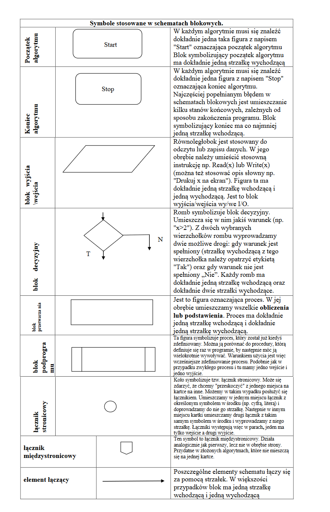

Czym jest Programowanie?
Proces tworzenia programu komputerowego, który ma realizować określone zadania.
Kod źródłowy jest napisany w języku programowania.
Dwie regóły, stosowane w jezykach programowania
Język programowania musi mieść określone:
a)Reguły syntaktyczne reguły składni wyrażeń i funkcji użytych w programie,
b)Reguły semantyczne semantyka języka programowania definiuje precyzyjnie znaczenie
poszczególnych symboli (instrukcje, operatory itp.) oraz ich funkcję w programie
Dwie definicje algorytmu
Definicja 1:
Jest to pewien ciąg czynności, który prowadzi do rozwiązania danego problemu w skończonej ilości kroków
Definicja 2:
To jednoznaczny przepis, opisujący krok po kroku sposób postępowania w celu
rozwiązania pewnego problemu lub sposobu osiągnięcia jakiegoś celu.
Ilość kroków algorytmu zależy od tego, jak złożony jest problem, którego on dotyczy. Zawsze
jednak liczba tych kroków będzie liczbą skończoną.
Cechy charakterystyczne poprawnego algorytmu
1. Poprawność - dla każdego przypisanego zestawu danych,
po wykonaniu skończonej liczby czynności, algorytm prowadzi do poprawnych wyników.
2. Jednoznaczność - w każdym przypadku zastosowania algorytmu dla tych samych
danych otrzymamy ten sam wynik.
3. Szczegółowość - wykonawca algorytmu musi rozumieć opisane czynności i potrafić je
wykonywać.
4. Uniwersalność - algorytm ma służyć rozwiązywaniu pewnej grupy zadań, a nie tylko
jednego zadania. Przykładowo algorytm na rozwiązywanie równań w postaci ax + b=0 ma je
rozwiązać dla dowolnych współczynników a i b, a nie tylko dla jednego konkretnego zadania,
np. 2x + 6 = 0
5. Skończoność – dla każdego zbioru poprawnych danych wejściowych algorytm powinien
zwracać wyniki w skończonej liczbie kroków.
6. Efektywność – algorytm powinien rozwiązywać problem w jak najmniejszej liczbie kroków.
Etapy konstrułowania algorytmów
1. Sformułowanie zadania.
2. Określenie danych wejściowych.
3. Określenie wyniku oraz sposobu jego prezentacji.
4. Ustalenie metody wykonania zadania.
5. Przy użyciu wybranej metody następuje zapisanie algorytmu.
6. Dokonujemy analizy poprawności rozwiązania.
7. Testowanie rozwiązania dla różnych danych.
8. Ocena skuteczności tegoż algorytmu.
Sposoby przedstawiania algorytmów
Elementy specyfikacji problwmów
Symbole stosowane w schematach blokowych

Regóły rysowania schematów blokowych
I. Po zbudowaniu schematu blokowego nie powinno być takich strzałek, które z nikąd nie wychodzą,
lub do nikąd nie dochodzą.
II. Każdy schemat blokowy musi mieć tylko jeden element startowy oraz co najmniej jeden element końca algorytmu.
III. Element łączący(strzałki łączące) powinien być rysowany w poziomie i pionie, załamania pod kątem prostym.
Czym jest Programowanie?